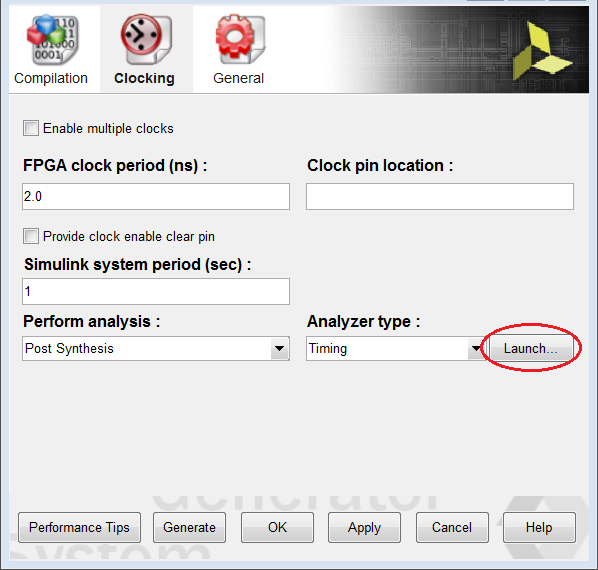
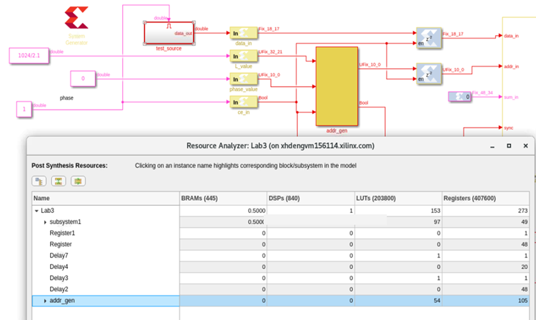

<html>
<head>
<title></title>
<meta name="viewport" content="width=device-width, initial-scale=1">
</head>
<body>
<h1 id="lab-3-timing-and-resource-analysis">Lab 3: Timing and Resource Analysis</h1>
<html>    
<script>
function myFunction() {

var path = document.location.pathname;
var directory = path.substring(path.indexOf('/'), path.lastIndexOf('/'));

commandURI="matlab:xmcHtmlOpenDesign('" + directory + "');"

document.location=commandURI
}
</script>
<noscript>Sorry, your browser does not support JavaScript!</noscript>
       
<button type="button" style="background-color:#d0d028; font-size: 20px;" onclick="myFunction()">Open Design</button>  
              
</html>
<p>In this lab, you learn how to verify the functionality of your designs by simulating in Simulink® to ensure that your Vitis Model Composer design is correct when you implement the design in your target Xilinx® device.</p>
<h3 id="objectives">Objectives</h3>
<p>After completing this lab, you will be able to:</p>
<ul>
<li>Identify timing issues in the HDL files generated by Vitis Model Composer and discover the source of the timing violations in your design.</li>
<li>Perform resource analysis and access the existing resource analysis results, along with recommendations to optimize.</li>
</ul>
<h3 id="procedure">Procedure</h3>
<p>This lab has two primary parts:</p>
<ul>
<li>In Step 1 you will learn how to do timing analysis in Vitis Model Composer.</li>
<li>In Step 2 you will learn how to perform resource analysis in Vitis Model Composer.</li>
</ul>
<h2 id="step-1-timing-analysis-in-vitis-model-composer">Step 1: Timing Analysis in Vitis Model Composer</h2>
<ol>
<li><p>Invoke Vitis Model Composer.</p>
<ul>
<li>On Windows systems select <strong>Windows > Xilinx Design Tools > Vitis Model Composer 2021.2.</strong></li>
<li>On Linux systems, type <code>model_composer</code> at the command prompt.</li></ul></li>
<li><p>Navigate to the Lab3 folder: <samp>\HDL_Library\Lab3.</samp><br />
<br><br>You can view the directory contents in the MATLAB® Current Folder browser, or type ls at the command line prompt.</p></li>
<li><p>Open the Lab3 design using one of the following:</p>
<ul>
<li>At the MATLAB command prompt, type open <code>Lab3.slx</code></li>
<li>Double-click Lab3.slx in the Current Folder browser.<br />
<br><br> The Lab3 design opens, as shown in the following figure.<br />
<br><br></li></ul></li>
<li><p>From your Simulink project worksheet, select Simulation &gt; Run or click the Run simulation button to simulate the design.</p></li>
</ol>
<blockquote>
<p> <strong>Note</strong>:  In order to see accurate results from Resource Analyzer Window it is recommended to specify a new target directory rather than use the current working directory.</p>
</blockquote>
<ol start="5">
<li><p>Double-click the <strong>System Generator</strong> token to open the Properties Editor.</p></li>
<li><p>Select the <strong>Clocking</strong> tab.</p></li>
<li><p>From the Perform analysis menu, select <strong>Post Synthesis</strong> and from Analyzer type menu select <strong>Timing</strong> as shown in the following figure.<br />
<br><br></p></li>
<li><p>In the System Generator token dialog box, click Generate.<br />
<br><br>When you generate, the following occurs:</p>
<ul>
<li>Vitis Model Composer generates the required files for the selected compilation target. For timing analysis Vitis Model Composer invokes Vivado in the background for the design project, and passes design timing constraints to Vivado.</li>
<li>Depending on your selection for Perform Analysis (Post Synthesis or Post Implementation), the design runs in Vivado through synthesis or through implementation.</li>
<li>After the Vivado tools run is completed, timing paths information is collected and saved in a specific file format from the Vivado timing database.</li>
<li>Vitis Model Composer processes the timing information and displays a Timing Analyzer table with timing paths information as shown in the following figure.<br />
<br><br></li></ul></li>
<li><p>In the timing analyzer table:</p>
<ul>
<li>Paths with lowest slack values display, with the worst slack showing at the top and increasing toward the bottom.</li>
<li>Paths with timing violations have a negative slack and display in red.</li></ul></li>
<li><p>Cross probe from the Timing Analyzer table to the Simulink model by clicking any path in the Timing Analyzer table, which highlights the corresponding Vitis Model Composer HDL blocks in the model. This allows you to troubleshoot timing violations by analyzing the path on which they occur.</p></li>
<li><p>When you cross probe, you see the corresponding path as shown in the following figure.</p></li>
<li><p>Blocks with timing violations are highlighted in red.<br />
<br><br></p></li>
<li><p>Double-click the second path in the Timing Analyzer table and cross-probe, the corresponding highlighted path in green which indicates no timing violation.<br />
<br><br><br />
<br><br> If you close the Timing Analyzer sometime later you might want to relaunch the Timing Analyzer table using the existing timing analyzer results for the model. A Launch button is provided under the Clocking tab of the System Generator token dialog box. This will only work if you already ran timing analysis on the Simulink model.<br />
<br><br></p></li>
</ol>
<blockquote>
<p> <strong>Note</strong>: If you relaunch the Timing Analyzer window, make sure that the Analyzer type field is set to Timing. The table that opens will display the results stored in the Target directory specified in the System Generator token dialog box, regardless of the option selected for Perform analysis (Post Synthesis or Post Implementation).</p>
</blockquote>
<h3 id="troubleshooting-timing-violations">Troubleshooting Timing Violations</h3>
<p>Inserting some registers in the combinational path might give better timing results and might help overcome timing violations if any. This can be done by changing latency of the combinational blocks as explained in the following.</p>
<ol>
<li><p>Click the violated path from the Timing Analyzer window which opens the violated path as shown in the following figure.<br />
<br><br></p></li>
<li><p>Double-click the Mult block to open the Multiplier block parameters window as shown in the following figure.<br />
<br><br></p></li>
<li><p>Under Basic tab, change the latency from 1 to 2 and click <strong>OK</strong>.</p></li>
<li><p>Double-click the <strong>System Generator</strong> token, and ensure that the Analyzer Type is Timing and click <strong>Generate</strong>.</p></li>
<li><p>After the generation completes, it opens the timing Analyzer table as shown in the following figure. Observe the status pass at the top-right corner. It indicates there are no timing violated paths in the design.<br />
<br><br></p></li>
</ol>
<blockquote>
<p> <strong>Note</strong>: <br><br />
a. For quicker timing analysis iterations, post-synthesis analysis is preferred over post-implementation analysis. <br><br />
b. Changing the latency of the block might increase the number of resources which can be seen using Step 2: Resource Analysis in Vitis Model Composer.</p>
</blockquote>
<h2 id="step-2-resource-analysis-in-vitis-model-composer">Step 2: Resource Analysis in Vitis Model Composer</h2>
<p>In this step we use same design, <samp>Lab3.slx</samp>, used for Step 1 but we are going to perform Resource Analysis.</p>
<blockquote>
<p>⭐ <strong>Tip</strong>: Resource Analysis can be performed whenever you generate any of the following compilation targets: <br></p>
<ul>
<li>IP catalog <br></li>
<li>Hardware Co-Simulation <br></li>
<li>Synthesized Checkpoint <br></li>
<li>HDL Netlist <br></li>
</ul>
</blockquote>
<ol>
<li>Double-click the <strong>System Generator</strong> token in the Simulink model. Ensure that the part is specified and Compilation is set to any one of the compilation targets listed above.</li>
</ol>
<blockquote>
<p> <strong>Note</strong>: In order to see accurate results from Resource Analyzer Window it is recommended to specify a new target directory rather than use the current working directory.</p>
</blockquote>
<ol start="2">
<li><p>In the Clocking tab, set the Perform Analysis field to <strong>Post Synthesis</strong> and Analyzer type field to <strong>Resource</strong>.<br />
<br><br></p></li>
<li><p>In the System Generator token dialog box, click <strong>Generate</strong><br />
<br><br>Model Comoser processes the resource utilization data and displays a Resource Analyzer window with resource utilization information.<br />
<br><br><br />
<br><br>Each column heading (for example, BRAMs, DSPs, or LUTs) in the window shows the total number of each type of resources available in the Xilinx device for which you are targeting your design. The rest of the window displays a hierarchical listing of each subsystem and block in the design, with the count of these resource types.</p></li>
<li><p>You can cross probe from the Resource Analyzer window to the Simulink model by clicking a block or subsystem name in the Resource Analyzer window, which highlights the corresponding Vitis Model Composer HDL block or subsystem in the model.<br />
<br><br>Cross probing is useful to identify blocks and subsystems that are implemented using a particular type of resource.</p></li>
<li><p>The block you have selected in the window will be highlighted yellow and outlined in red.<br />
<br><br></p></li>
<li><p>If the block or subsystem you have selected in the window is within an upper-level subsystem, then the parent subsystem is highlighted in red in addition to the underlying block as shown in the following figure.<br />
<br><br></p></li>
</ol>
<blockquote>
<p>❗❗ <strong>Important</strong>: If the Resource Analyzer window or the Timing Analyzer window opens and no information is displayed in the window (table cells are empty), double-click the System Generator token and set the Target directory to a new directory, that is, a directory that has not been used before. Then run the analysis again.</p>
</blockquote>
<h2 id="summary">Summary</h2>
<p>In this lab you learned how to use timing and resource analysis inside Model Composer which, in turn, invokes Vivado synthesis to collect the information for the analysis. You also learned how to identify timing violated paths and to troubleshoot them for simple designs.</p>

</div>
<style type='text/css'>body {
font: 400 16px/1.5 "Helvetica Neue", Helvetica, Arial, sans-serif;
color: #111;
background-color: #fdfdfd;
-webkit-text-size-adjust: 100%;
-webkit-font-feature-settings: "kern" 1;
-moz-font-feature-settings: "kern" 1;
-o-font-feature-settings: "kern" 1;
font-feature-settings: "kern" 1;
font-kerning: normal;
padding: 30px;
}

@media only screen and (max-width: 600px) {
body {
padding: 5px;
}

body > #content {
padding: 0px 20px 20px 20px !important;
}
}

body > #content {
margin: 0px;
max-width: 900px;
border: 1px solid #e1e4e8;
padding: 10px 40px;
padding-bottom: 20px;
border-radius: 2px;
margin-left: auto;
margin-right: auto;
}

hr {
color: #bbb;
background-color: #bbb;
height: 1px;
flex: 0 1 auto;
margin: 1em 0;
padding: 0;
border: none;
}

/**
* Links
*/
a {
color: #0366d6;
text-decoration: none; }
a:visited {
color: #0366d6; }
a:hover {
color: #0366d6;
text-decoration: underline; }

pre {
background-color: #f6f8fa;
border-radius: 3px;
font-size: 85%;
line-height: 1.45;
overflow: auto;
padding: 16px;
}

/**
* Code blocks
*/

code {
background-color: rgba(27,31,35,.05);
border-radius: 3px;
font-size: 85%;
margin: 0;
word-wrap: break-word;
padding: .2em .4em;
font-family: SFMono-Regular,Consolas,Liberation Mono,Menlo,Courier,monospace;
}

pre > code {
background-color: transparent;
border: 0;
display: inline;
line-height: inherit;
margin: 0;
overflow: visible;
padding: 0;
word-wrap: normal;
font-size: 100%;
}


/**
* Blockquotes
*/
blockquote {
margin-left: 30px;
margin-top: 0px;
margin-bottom: 16px;
border-left-width: 3px;
padding: 0 1em;
color: #828282;
border-left: 4px solid #e8e8e8;
padding-left: 15px;
font-size: 18px;
letter-spacing: -1px;
font-style: italic;
}
blockquote * {
font-style: normal !important;
letter-spacing: 0;
color: #6a737d !important;
}

/**
* Tables
*/
table {
border-spacing: 2px;
display: block;
font-size: 14px;
overflow: auto;
width: 100%;
margin-bottom: 16px;
border-spacing: 0;
border-collapse: collapse;
}

td {
padding: 6px 13px;
border: 1px solid #dfe2e5;
}

th {
font-weight: 600;
padding: 6px 13px;
border: 1px solid #dfe2e5;
}

tr {
background-color: #fff;
border-top: 1px solid #c6cbd1;
}

table tr:nth-child(2n) {
background-color: #f6f8fa;
}

/**
* Others
*/

img {
max-width: 100%;
}

p {
line-height: 24px;
font-weight: 400;
font-size: 16px;
color: #24292e; }

ul {
margin-top: 0; }

li {
color: #24292e;
font-size: 16px;
font-weight: 400;
line-height: 1.5; }

li + li {
margin-top: 0.25em; }

* {
font-family: -apple-system, BlinkMacSystemFont, "Segoe UI", Helvetica, Arial, sans-serif, "Apple Color Emoji", "Segoe UI Emoji", "Segoe UI Symbol";
color: #24292e; }

a:visited {
color: #0366d6; }

h1, h2, h3 {
border-bottom: 1px solid #eaecef;
color: #111;
/* Darker */ }</style>
</body>
</html>
